Understanding standardized infection control terminology is essential for accurate clinical communication and adherence to healthcare facility protocols across Canada.
深入理解并掌握标准化的感染控制专业术语，是支持工作者进行准确临床沟通以及恪守全加拿大各省医疗护理机构感控规范的基石。
Sorrentino 原版教材第 19 章共收录 50 个感染控制、微生物学、消毒灭菌与防护隔离核心术语。支持实时模糊检索及「紧凑表格 / 记忆卡片」双模态自由切换。
| 英文术语 / 临床概念 | 中文对照 / 原书页码 | 教材标准学术释义与临床界定 |
|---|---|---|
| Asepsis | 无菌术 / 无菌状态 p. 389 |
The practice of reducing or eliminating potential pathogens (bacteria, viruses, fungi, and parasites). There are two levels of asepsis: (1) medical asepsis and (2) surgical asepsis.
无菌术 / 无菌状态：减少或消灭潜在病原体（细菌、病毒、真菌和寄生虫）的临床实践。包括两个级别：(1) 内科无菌术；(2) 外科无菌术。
|
| Bacteria | 细菌 p. 379 |
Single-celled microbes that naturally occur on living, dead, or inanimate objects.
细菌：天然存在于有生命的机体、死亡组织或无生命物体表面的单细胞微生物。
|
| Biohazardous Waste | 生物危害废弃物 p. 410 |
Items that may be harmful to others because they are contaminated with blood, body fluids, secretions, or excretions; bio means 'life' and hazardous means 'dangerous'.
生物危害废弃物：因受到血液、体液、分泌物或排泄物污染而可能对他人生理健康造成严重危害的物品。
|
| Carriers | 病原携带者 p. 389 |
Persons who are able to transfer a pathogen to others without getting an active infection themselves.
病原携带者：自身不表现出活动性感染症状，但体内携带病原体并能将其传播给易感人群的个体。
|
| Clean Technique | 清洁技术 p. 389 |
See medical asepsis. Practices that reduce the number of pathogens and prevent their spread.
清洁技术：参见“内科无菌术”。旨在减少病原体数量并防止其扩散的防护技术。
|
| Clostridium difficile (C. difficile) | 艰难梭菌（C. diff） p. 381 |
A bacterium that causes diarrhea and colitis. It is the most common cause of infectious diarrhea in hospitalized people and long-term care facilities.
艰难梭菌（C. diff）：一种可导致严重腹泻与假膜性结肠炎的产芽孢厌氧菌。是住院患者与长期照护机构中最常见的感染性腹泻病因。
|
| Colonize | 定植 p. 381 |
To establish a habitat; for example, bacteria grow on or in specific regions of the body and survive as part of that person's normal flora without causing disease.
定植：在宿主体表或体内特定区域建立栖息繁殖地，作为正常菌群的一部分共生存活而不引发急性病理损害。
|
| Communicable Disease | 传染病 p. 382 |
A disease caused by microbes that spreads easily from person to person. Also known as contagious disease.
传染病：由病原微生物引起、极易在人与人之间相互传播扩散的疾病。亦称接触传染病。
|
| Communicable Phase | 传染期 p. 383 |
The period when a person is infectious and can spread pathogens to others.
传染期：宿主体内病原体具有传染性、能够向外界排菌并传染给他人的临床时段。
|
| Contamination | 污染 p. 389 |
The process of being exposed to microorganisms, including pathogens, or having pathogens present on equipment or supplies.
污染：物体、皮肤黏膜或环境接触到包括病原体在内的微生物的过程，或器械物品附着有病原微生物的状态。
|
| COVID-19 | 新型冠状病毒肺炎（COVID-19） p. 385 |
A highly contagious coronavirus disease (caused by SARS-CoV-2) that resulted in a worldwide pandemic, with severe impacts on vulnerable groups.
新型冠状病毒肺炎（COVID-19）：由严重急性呼吸综合征冠状病毒2型（SARS-CoV-2）引发的高度接触传染性呼吸道疾病，曾导致全球性大流行。
|
| Disinfection | 消毒 p. 399 |
The process of destroying pathogens on inanimate objects, usually using chemical agents.
消毒：使用物理或化学方法杀灭无生命物体表面大部分致病微生物（但通常无法杀灭细菌芽孢）的过程。
|
| Droplet | 飞沫 p. 388 |
A small drop of liquid produced by coughing, sneezing, or talking that can carry pathogens over short distances (less than 2 metres).
飞沫：咳嗽、打喷嚏或大声交谈时喷出的微小液体颗粒，可在短距离内（2米以内）携带病原体传播。
|
| Endospore | 芽孢 / 内生孢子 p. 379 |
The protective shell that surrounds dormant bacteria, protecting them from external harm such as heat, dryness, and chemicals.
芽孢 / 内生孢子：休眠细菌在恶劣外界环境中形成的具有高度耐热、抗干燥及抗化学消毒剂的致密保护层。
|
| Febrile Respiratory Illness (FRI) | 发热性呼吸道疾病（FRI） p. 390 |
A term used to describe a wide range of respiratory infections with fever, such as colds, influenza, and pneumonia.
发热性呼吸道疾病（FRI）：指伴有发热的各类呼吸道感染综合征，包括普通感冒、流感及肺炎等。
|
| Fomite | 污染物媒（污染媒介物） p. 387 |
Any nonliving object that is capable of carrying infectious organisms and that may serve as a mode of transmission.
污染物媒（污染媒介物）：能够吸附或携带病原微生物并作为传播途径的任何无生命物体（如床单、门把手、听诊器等）。
|
| Fungi | 真菌 p. 379 |
Microbes that live only on organic matter such as plants and animals (e.g., yeasts and moulds).
真菌：仅寄生或腐生于动植物等有机物上的微生物（如酵母菌和霉菌）。
|
| Hand Hygiene | 手卫生 p. 392 |
The process of cleaning hands, which includes both handwashing with soap and water and using alcohol-based hand rubs.
手卫生：清洁双手的全过程统称，包括肥皂流水洗手与使用含酒精免水手消毒剂两大范式。
|
| Handwashing | 流水洗手 p. 392 |
The process of removing soil, dead skin cells, and excess microbes from the hands using soap, mechanical friction, and warm running water.
流水洗手：运用温和肥皂、机械揉搓摩擦与流动温水，彻底清除双手污垢、死皮细胞及多余附着微生物的过程。
|
| Healthcare-Associated Infection (HAI) | 医疗机构相关感染（HAI） p. 383 |
An infection acquired while a person is receiving care in a healthcare facility. Replaced the former term 'nosocomial infection'.
医疗机构相关感染（HAI）：案主在医疗或护理机构接受诊疗照护期间获得的感染。已正式取代旧称“医院内感染（Nosocomial Infection）”。
|
| Incubation Period | 潜伏期 p. 383 |
The time between initial exposure to a pathogenic organism and the appearance of the first signs and symptoms.
潜伏期：人体从首次接触或吸入病原微生物，到出现首发临床体征或自觉症状之间的时间间隔。
|
| Infection | 感染 p. 382 |
A disease state resulting from the invasion, establishment, and growth of pathogens in the body tissue.
感染：病原体侵入机体组织并在其内定植、生长与繁殖所导致的病理损害与全身反应状态。
|
| Infection Control | 感染控制 p. 378 |
Policies and procedures used to prevent the spread of infection within healthcare settings.
感染控制：旨在医疗与养老照护机构内阻断病原体扩散、保护案主与医务人员安全的标准化政策、规章与操作流程。
|
| Influenza ('the flu') | 流行性感冒（流感） p. 384 |
A highly contagious viral infection of the respiratory tract transmitted by airborne droplets.
流行性感冒（流感）：由流感病毒引起、主要通过呼吸道飞沫传播的高度传染性急性呼吸系统疾病。
|
| Isolation Precautions | 隔离防护措施 p. 401 |
Guidelines for preventing the spread of pathogens, including Standard Practices and Transmission-Based Practices.
隔离防护措施：用于阻断特定病原体扩散的临床指南体系，涵盖常规预防措施与基于传播途径的隔离措施。
|
| Medical Asepsis | 内科无菌术 p. 389 |
Practices that reduce the number of pathogens and prevent their spread from one person or place to another. Also known as clean technique.
内科无菌术：旨在减少病原体数量并防止其在人与人、或人与环境之间交叉传播的临床操作体系。亦称清洁技术。
|
| MRSA | 耐甲氧西林金黄色葡萄球菌（MRSA） p. 381 |
Methicillin-resistant Staphylococcus aureus; a strain of staph bacteria resistant to common broad-spectrum antibiotics.
耐甲氧西林金黄色葡萄球菌（MRSA）：一种对甲氧西林及多种常用β-内酰胺类抗生素产生高度耐药性的临床超级细菌菌株。
|
| Microorganism | 微生物 p. 378 |
A form of life so small it can be seen only with a microscope. Also known as a microbe.
微生物：肉眼无法直接看清、必须借助显微镜方能观察到的微小单细胞或无细胞生物生命形式。
|
| Multidrug-Resistant Organism (MRO) | 多重耐药菌（MRO） p. 380 |
A strain of bacteria that is resistant to three or more classes of antibiotics.
多重耐药菌（MRO）：对临床上三种或以上常用不同类别抗菌药物同时具有耐药性的细菌菌株。
|
| Nonpathogen | 非病原体（非致病微生物） p. 379 |
A microbe that does not usually cause infection or disease and is generally harmless or beneficial to humans.
非病原体（非致病微生物）：正常情况下不引起机体感染或疾病、通常对人类机体无害乃至有益的共生微生物。
|
| Normal Flora | 正常菌群 p. 379 |
The microorganisms (primarily bacteria and yeast) that naturally live on the surface of skin, mucous membranes, and gastrointestinal tract without causing harm under healthy conditions.
正常菌群：自然定植于健康人体皮肤表面、黏膜及消化道内部，与宿主维持动态共生平衡的微生物群落。
|
| Pandemic | 大流行（全球大流行） p. 384 |
An epidemic that spreads quickly across multiple countries, continents, or worldwide.
大流行（全球大流行）：在跨国境、跨大洲乃至全球范围内迅速暴发扩散的大规模传染病流行事件。
|
| Parasites | 寄生虫 p. 379 |
Organisms that derive nourishment and protection from another living organism, known as the host, often causing damage.
寄生虫：依附于另一种称为宿主的活体生物体内或体表获取营养与生存庇护，并往往对宿主造成病理性损害的有机生命体。
|
| Pathogen | 病原体（致病微生物） p. 379 |
A microbe that is capable of causing disease or infection in a susceptible host.
病原体（致病微生物）：具备侵袭力并在易感宿主体内引发临床疾病或感染的有害微生物。
|
| Personal Protective Equipment (PPE) | 个人防护装备（PPE） p. 398 |
Special clothing and equipment (gloves, gown, mask, goggles, face shield) that act as a physical barrier between microbes and the worker.
个人防护装备（PPE）：用于在医护人员的面部、双手、呼吸道及身体衣物与病原体之间建立物理阻隔屏障的专用防护用具（包括手套、隔离衣、医用口罩、护目镜及防护面屏）。
|
| Physical Distancing | 物理距离保持 p. 385 |
Maintaining a distance of at least 2 metres from others to reduce the risk of respiratory droplet transmission.
物理距离保持：与他人保持至少 2 米的安全间距，以大幅削减呼吸道飞沫在空中传播并致病的概率。
|
| Reservoir | 贮存宿主 / 传染源（储存库） p. 379 |
The natural environment or host in which microbes live, grow, and multiply (e.g., humans, animals, water, soil).
贮存宿主 / 传染源（储存库）：病原微生物赖以生存、繁衍与增殖的自然生态环境或活体宿主（如人体、动物、水体及土壤）。
|
| Sharps | 锐器 p. 403 |
Equipment or items that may puncture or lacerate human skin, including injection needles, scalpels, lancets, and broken glass.
锐器：具有尖锐边缘或针尖、易刺破或划伤人体皮肤并导致血液暴露感染的医疗用品（包括注射针头、手术刀片、采血针及破损安瓿玻璃）。
|
| Standard Practices | 常规预防措施 p. 402 |
Guidelines used in the care of all clients to prevent transmission of infections from blood, all body fluids, secretions, excretions, non-intact skin, and mucous membranes.
常规预防措施：针对所有接受照护的案主普遍执行的感染控制金标准，无论其是否确诊传染病，均防范血液、体液、排泄物及破损皮肤黏膜的潜在传染。
|
| Sterile | 无菌 p. 392 |
Completely free of all viable microorganisms, including both pathogens and nonpathogens, as well as bacterial spores.
无菌：完全不含有任何具有生命活力的微生物（包括全部致病菌、非致病菌以及高度耐受的细菌芽孢）的绝对洁净状态。
|
| Sterile Field | 无菌区 p. 411 |
A designated clean work surface completely free of all microorganisms, upon which only sterile supplies and instruments may be placed.
无菌区：经过严密无菌铺单设立、完全不存在任何活体微生物的专用操作工作台面，仅允许放置完全无菌的器械与敷料。
|
| Sterilization | 灭菌 p. 392 |
The validated process that destroys all forms of microbial life, including bacterial endospores, using pressurized steam (autoclave), dry heat, or gas.
灭菌：运用高温高压蒸汽（高压灭菌锅）、干热或环氧乙烷化学气体等物理化学手段，彻底毁灭包括细菌芽孢在内的一切微生物形态的绝对过程。
|
| Surgical Asepsis | 外科无菌术 p. 389 |
The rigorous practices that keep equipment, supplies, and sterile fields completely free of all microorganisms. Also called sterile technique.
外科无菌术：旨在使所有手术器械、敷料用物及术野环境维持绝对无菌、杜绝任何微生物引入的严苛操作体系。亦称无菌技术。
|
| Transmission-Based Practices | 基于传播途径的预防措施 p. 402 |
Specific infection control precautions tailored for clients known or suspected to be infected with highly transmissible pathogens (Contact, Droplet, Airborne).
基于传播途径的预防措施：针对已知或高度疑似感染高传染性病原体的案主所制定的专项隔离防护措施（涵盖接触隔离、飞沫隔离与空气传播隔离）。
|
| Tuberculosis (TB) | 结核病（TB） p. 389 |
A persistent bacterial infection caused by Mycobacterium tuberculosis, typically transmitted through airborne droplet nuclei and primarily affecting the lungs.
结核病（TB）：由结核分枝杆菌引发的慢性顽固性细菌感染，主要经空气中的微小飞沫核吸入传播，最常累及肺部呼吸系统。
|
| Vaccine | 疫苗 p. 379 |
A biological preparation (containing weakened or killed pathogens, or parts of them) that stimulates the body's immune system to provide active acquired immunity.
疫苗：含有减毒、灭活病原微生物或其抗原组分的生物制剂，能特异性刺激宿主免疫系统产生保护性抗体与细胞免疫记忆。
|
| VRE | 耐万古霉素肠球菌（VRE） p. 381 |
Vancomycin-resistant Enterococcus; a type of bowel bacterium that has developed resistance to the potent antibiotic vancomycin.
耐万古霉素肠球菌（VRE）：一种原定植于人体肠道、但对强效最后防线抗生素万古霉素产生高度耐药性的临床致病菌株。
|
| Vector | 媒介生物（传病媒介） p. 387 |
An organism (such as a mosquito, tick, or flea) that transmits disease-causing microbes from one host to another without being the disease itself.
媒介生物（传病媒介）：自身不致病、但能将病原体从一个宿主机械或生物性转移给另一个宿主的生物媒介（如蚊子、蜱虫、跳蚤等）。
|
| Viruses | 病毒 p. 379 |
Submicroscopic infectious agents that can only replicate inside the living cells of an organism.
病毒：结构极微小的非细胞生命形态，缺乏独立代谢系统，必须侵入宿主活细胞内部利用宿主机制进行复制增殖。
|
| Waterless, Alcohol-Based Hand Rubs | 免水含酒精手消毒凝胶 p. 392 |
Antiseptic formulations containing 60% to 90% alcohol rubbed over all surfaces of the hands until dry, rapidly reducing skin microbial counts.
免水含酒精手消毒凝胶：含有 60% 至 90% 乙醇或异丙醇成分的快速手消毒制剂，通过充分揉搓双手指缝至干燥，能在数秒内灭活大部分体表暂居微生物。
|
Understanding standardized infection control terminology is essential for accurate clinical communication and adherence to healthcare facility protocols across Canada.
深入理解并掌握标准化的感染控制专业术语，是支持工作者进行准确临床沟通以及恪守全加拿大各省医疗护理机构感控规范的基石。
Asepsis refers to the practice of reducing or eliminating potential pathogens, including bacteria, viruses, fungi, and parasites. In clinical practice, asepsis is divided into two distinct levels: medical asepsis (clean technique) and surgical asepsis (sterile technique).
无菌术（Asepsis）是指减少或彻底消灭环境中潜在病原体（包括细菌、病毒、真菌与寄生虫）的临床实践。在实际工作中，无菌术严格划分为两个不同级别：内科无菌术（清洁技术）与外科无菌术（无菌技术）。
Biohazardous waste encompasses any items or disposable supplies contaminated with blood, body fluids, secretions, or excretions that may transmit disease. These materials must be handled with rigid protective precautions and discarded into designated biohazard receptacles.
生物危害废弃物（Biohazardous waste）涵盖所有受到血液、体液、分泌物或排泄物污染、具有潜在传播疾病风险的物品与一次性耗材。此类物品必须在严密个人防护下妥善处置，并投放至带有生物危害专用标识的容器中。
Infection can be a serious safety and health hazard. Some infections cause only minor symptoms, whereas others are much more serious. They may delay a person's recovery, create long-term health problems, or even cause death in some situations.
感染是临床护理中极具危害性的安全与健康威胁。有些感染仅引起轻微不适，而另一些则极为凶险。它们会延缓案主的康复进程、导致长期的慢性健康损害，在某些危重情况下甚至会直接危及生命。
Older persons, people with health challenges, and people with disabilities are at increased risk of developing infections. Infections can easily spread from worker to client, from client to client, or from client to worker.
老年人、伴有慢性基础疾病者以及残障人士罹患严重感染的风险显著增高。在日常照护中，病原微生物极易在工作人员与案主之间、案主与案主之间、或案主与工作人员之间相互交叉传播。
All members of the health care team must take every precaution to protect clients and themselves from infection. As a support worker, in order to prevent infection, you must understand how infections spread and also must follow your employer's infection-control policies. Proper hand hygiene—the easiest way to reduce the risk for infection spread—should always accompany any other infection-control efforts.
跨专业医护团队的每一位成员都必须采取一切必要预防措施，全力保护案主和自身免受感染侵害。作为支持工作者，为了有效防范感染，您必须深刻理解感染的传播动力学，并严格遵守所在雇主机构的感控政策。规范的手卫生——作为阻断感染传播最简便、最经济且最有效的方式——必须始终贯穿于一切临床照护实践之中。
A microorganism (microbe), sometimes called a 'germ' or 'bug,' is a form of life (organism) that is so small (micro) it can be seen only with a microscope. Microbes live and grow everywhere—in and on water, air, food, soil, plants, animals, and inanimate (nonliving) objects such as clothing, furniture, medical equipment, and personal care items. Microbes also live and grow on and in people—on the skin and in the mouth, nose, respiratory tract, stomach, and intestines.
微生物（Microorganism / 亦称微菌或病菌）是一种个体微小、必须借助显微镜方能观察到的生命形式。微生物在自然界中无处不在——存活并繁衍于水体、空气、食物、土壤、植物、动物以及衣物、家具、医疗仪器、个人护理用品等无生命物体表面。微生物同样大量寄居于人体表面与体内，如皮肤、口腔、鼻腔、呼吸道、胃部以及肠道内。
Most microbes usually do not cause infection or disease; these are called nonpathogens. Microbes that are harmful and can cause infection or disease are called pathogens. Within health care settings, the four types of microbes that cause the greatest risk for infection are bacteria, viruses, fungi, and parasites.
绝大多数微生物通常不会引起人体感染或发病，这些被称为非病原体（Nonpathogens）。而能够对人体造成病理性损害、引发感染或疾病的有害微生物则被称为病原体（Pathogens）。在医疗照护环境中，构成感染威胁最大的四类微生物分别是：细菌、病毒、真菌与寄生虫。
Normal flora consists of microbes (primarily bacteria and yeast) that play a number of essential roles in human health: they aid digestion, synthesize certain essential vitamins (such as vitamin K and B complex), and help suppress infections by outcompeting harmful pathogens. However, if a bacterium from normal flora is transferred to an unnatural body site, it can cause severe disease. For example, Escherichia coli (E. coli) normally colonizes the large intestine safely, but if introduced into the bladder or bloodstream, it causes acute urinary tract infection (UTI) or septic shock.
正常菌群（Normal flora）是由定植于健康人体特定部位的微生物（主要是细菌和酵母菌）构成的生态系统。它们在人体生理中发挥着不可或缺的作用：辅助食物消化、合成维生素（如维生素K与B族维生素），并通过占位效应竞争性抑制外来致病菌的定植。然而，如果正常菌群脱离其原生态位进入其他无菌组织，就会转变为条件致病菌引发严重疾病。例如，大肠埃希菌（E. coli）在结肠内是维持肠道健康的共生菌，但一旦侵入尿道与膀胱、或进入血液循环，便会诱发急性尿路感染乃至致命的败血性休克。
Antibiotics are powerful medications that kill or inhibit bacteria. However, over-prescription, misuse, and incomplete courses of antibiotic therapy have caused bacteria to adapt and mutate, producing multidrug-resistant organisms (MROs). An MRO is a strain of bacteria that has developed resistance to three or more distinct classes of common antibiotics.
抗生素是杀灭或抑制细菌生长的强效药物。然而，临床过度处方、不合理滥用以及案主未完成标准疗程便擅自停药，导致细菌迅速适应并发生基因突变，最终催生了多重耐药菌（MRO）。所谓多重耐药菌，是指对临床上三种或更多不同类别的常用抗菌药物同时产生耐药性的细菌变异菌株。
MROs are often referred to in the public media as 'superbugs.' Because standard frontline and second-line antibiotics fail against these pathogens, infections caused by MROs require specialized, highly toxic, and costly medications, resulting in extended hospitalization, higher healthcare costs, and elevated mortality.
多重耐药菌在公众媒体中常被称为“超级细菌（Superbugs）”。由于一线及二线标准抗生素对它们完全失效，MRO 引起的感染不得不使用疗效有限、毒副作用极大且价格昂贵的特殊抗生素，导致案主住院时间显著延长、医疗费用激增，且死亡率居高不下。
Staphylococcus aureus ('staph') is a common bacterium found naturally on the skin and in the nasal passages of approximately one-third of the population. MRSA is a strain that has become resistant to methicillin and other penicillin-related antibiotics. MRSA can cause severe skin abscesses, pneumonia, bloodstream infections, and surgical site infections. It spreads predominantly by direct skin-to-skin contact or by touching contaminated environmental surfaces.
金黄色葡萄球菌（简称葡萄球菌）是普遍存在于约三分之一健康人群皮肤表面及前鼻孔的常见细菌。MRSA 则是对甲氧西林及其他所有青霉素类抗生素产生高度抗药性的变异株。MRSA 可引发严重的皮肤软组织脓肿、坏死性肺炎、血液败血症及术后手术部位感染。其主要通过皮肤直接接触或触摸受污染的环境物体表面而迅速播散。
Enterococci are bacteria that normally live harmlessly within the human digestive tract and female genital tract. VRE strains are resistant to vancomycin, an antibiotic considered one of modern medicine's last lines of defense. When enterococci develop resistance and cause clinical infections (such as bacteremia, endocarditis, or deep wound infections), available therapeutic options are dangerously limited.
肠球菌是通常无害定植于人体胃肠道及女性生殖系统的正常菌群。VRE 菌株则对被视为现代医学“最后防线”之一的强效抗生素万古霉素产生了抗药性。一旦耐药肠球菌侵入无菌部位引发菌血症、心内膜炎或深部伤口感染，临床可供选择的有效抗生素方案将极其匮乏。
Clostridium difficile is a spore-forming, anaerobic bacterium that causes mild to life-threatening watery diarrhea and pseudomembranous colitis. It is the leading cause of healthcare-associated infectious diarrhea across Canadian hospitals and long-term care homes. C. diff spores are encased in a tough protein shell that resists drying, heat, and alcohol-based hand rubs. Hands MUST be washed with soap and running water to physically wash away the spores.
艰难梭菌是一种产芽孢的厌氧杆菌，能引发从轻度水样腹泻到危及生命的假膜性结肠炎。它是全加拿大各医院及长期护理机构中最常见的医疗相关感染性腹泻病因。艰难梭菌芽孢外包裹着极其坚韧的蛋白质外壳，对环境干燥、热力和免水酒精洗手液具有完全耐受性。照护此类案主后，必须使用肥皂与流动水进行机械揉搓冲洗，方能彻底将芽孢从手上洗除！
An infection is an illness or disease state resulting from the invasion, multiplication, and toxic effects of pathogens in body tissues. Pathogens can be transmitted through contact with an infected individual, an asymptomatic carrier, or contaminated inanimate surfaces (fomites). A communicable disease (contagious disease) is an infectious disease that easily spreads from person to person.
感染是指病原微生物侵入机体组织、在其内生长繁殖并产生毒素，进而引发机体局部组织损伤与全身病理反应的疾病状态。病原体可通过与活动性感染患者、无症状带菌者或被污染的无生命物体表面（污染物媒）发生接触而传播。传染病（接触传染病）特指极易在人与人之间相互传播扩散的感染性疾病。
Clinically, infections are categorized according to anatomical extent: (1) A local infection is confined to a specific body part or localized tissue region (e.g., an infected burn on the hand, a boil, or otitis media). (2) A systemic infection involves the entire body or multiple organ systems, with pathogens circulating in the bloodstream (e.g., sepsis, generalized viral syndromes).
在临床医学中，感染依据其解剖累及范围严格划分为两大类别：（1）局部感染（Local infection）：局限于身体特定部位或某一局限组织内（例如手部感染性擦伤、皮肤疖肿或中耳炎）；（2）全身性感染（Systemic infection）：累及机体整体或多个器官系统，病原体往往已侵入血液循环并播散至全身（例如败血症、全身性病毒血症等）。
A healthcare-associated infection (HAI), previously called a nosocomial infection, is an infection acquired by a client while receiving care in a healthcare facility (hospital, rehabilitation unit, or long-term care home). HAIs represent a significant patient safety failure, often caused by poor hand hygiene compliance, improper sterile technique during catheterizations, or cross-contamination from shared diagnostic equipment.
医疗机构相关感染（HAI / 既往被称为医院内感染 Nosocomial infection），特指案主在各类医疗或养老照护机构（急性期医院、康复中心、长期护理院）接受诊疗与生活护理期间所获得的感染。HAI 是临床医疗安全领域的重大风险，多由医护人员手卫生执行不力、导尿或换药时无菌操作不严谨、或共用医疗器械消毒不彻底导致的交叉污染所诱发。
The incubation period is the time elapsed between initial exposure to a pathogen and the appearance of the first diagnostic signs and symptoms. During this period, the host may feel entirely healthy but may already shed pathogens into the environment during the communicable phase.
潜伏期（Incubation period）是指机体自最初接触或吸入病原微生物，直至机体显现出首发临床体征或自觉症状之间的时间跨度。在潜伏期内，受感染宿主自身可能感觉完全健康无恙，但在具有排菌能力的传染期（Communicable phase）内，已具备向周围环境播散病原体并传染他人的能力。
An epidemic occurs when a disease affects a significantly larger number of people than normal within a localized community. A pandemic is an epidemic that spreads rapidly across extensive geographic areas, international borders, multiple continents, or worldwide. Throughout modern history, pandemics caused by influenza strains and coronaviruses have tested public health infrastructure.
当某种传染病在某一特定区域社区内发病人数显著超出预期常规基线时，称为地方性流行（Epidemic）。而全球大流行（Pandemic）则是指疫情迅速跨越国界、蔓延至多个大洲乃至波及全球的特大规模公共卫生危机。在现代人类历史上，流感病毒变异株与冠状病毒引发的全球大流行对医疗救治与公共卫生体系带来了严峻考验。
Influenza is a highly contagious respiratory infection caused by influenza viruses (predominantly types A and B) spread through airborne droplets and contaminated surfaces. Symptoms arise acutely, including high fever, severe myalgia (muscle aches), dry cough, prostration, and sore throat. Influenza can rapidly progress to primary viral pneumonia or secondary bacterial pneumonia in frail older adults.
流行性感冒（流感）是由流感病毒（主要是甲型和乙型）引起的极易传染的急性呼吸道感染，主要经呼吸道飞沫及接触受污染表面传播。其起病急骤，表现为突发高热、全身肌肉剧烈酸痛（肌痛）、刺激性干咳、极度虚弱衰竭与咽痛。在高龄体弱案主中，流感极易迅速恶化为原发性病毒性肺炎或继发严重细菌性肺炎并导致呼吸衰竭。
The Coronavirus Disease 2019 (COVID-19), caused by the SARS-CoV-2 novel coronavirus, emerged in late 2019 and rapidly escalated into a historic global pandemic. In less than a year, COVID-19 infected tens of millions of people and claimed millions of lives worldwide. In Canada, long-term care homes and congregate care settings were hit disproportionately, resulting in catastrophic loss of life among vulnerable seniors.
由新型冠状病毒（SARS-CoV-2）引发的 2019 冠状病毒病（COVID-19），于 2019 年底暴发并迅速演变为人类现代历史上波及最广的全球性世纪大流行。在短短一年内，全球数千万人被感染，数百万人失去宝贵生命。在加拿大，长期护理院和集体养老设施遭受了极其沉重的冲击，脆弱老年人群体的生命健康付出了极其惨痛的代价。
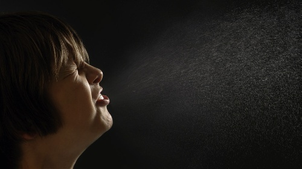
Figure 19.1 graphically demonstrates the violent physical force of an unmasked sneeze. High-speed imaging reveals that a single sneeze can discharge upwards of 40,000 droplets containing millions of viral and bacterial particles at speeds exceeding 150 kilometres per hour, propelling them across distances far greater than 2 metres under turbulent cloud conditions.
图 19.1 真实记录了未戴口罩打喷嚏时所产生的巨大物理爆发力。高速摄影成像显示，单次强力喷嚏可瞬间喷射出超过 40,000 颗大小不等的飞沫微滴，携带数以百万计的存活病毒与细菌颗粒，其喷射初速度可突破每小时 150 公里，在室内湍流热气团包裹下，传播扩散距离可远超 2 米常规防线。
Larger respiratory droplets fall quickly onto surfaces within 1 to 2 metres due to gravity, contaminating bedrails, bedside tables, and medical devices. Smaller droplet nuclei, however, can remain suspended in the air currents for hours and can be inhaled deep into the alveoli of unsuspecting individuals.
较大的呼吸道飞沫在重力作用下通常在 1 至 2 米范围内迅速下沉坠落，污染床栏、床头柜及周围医疗器械表面成为污染物媒；而微小的飞沫核（Droplet nuclei）则可蒸发水分并长期悬浮于室内气流中数小时之久，随呼吸被不知情的人员深吸入肺泡底层诱发严重感染。
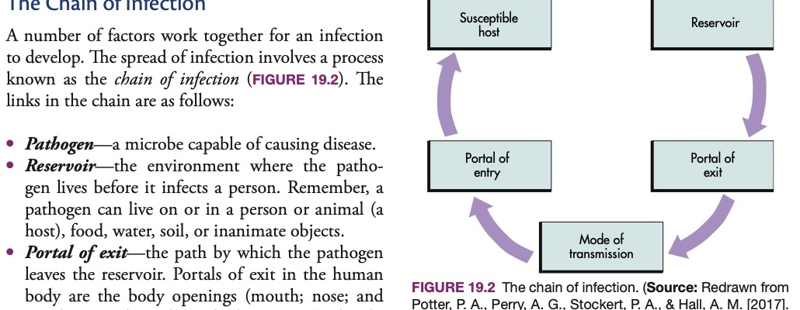
For an infection to develop and spread, six sequential biological conditions must be satisfied. This cycle is known as the Chain of Infection (FIGURE 19.2). As a support worker, your clinical interventions are purposefully designed to BREAK one or more of these links, thereby stopping transmission entirely.
临床感染的发生与播散必须依序满足六大生物学生态环节，这一闭环被确立为“感染链（The Chain of Infection）”（图 19.2）。作为支持工作者，您所执行的各项感控操作与护理规程，核心目的正是精准【阻断（BREAK）】其中的一个或多个环节，从而彻底遏止感染的进一步蔓延。
Pathogens cannot travel on their own; they require specific transmission mechanisms to reach a susceptible host. Health Canada and provincial infection control bodies categorize transmission into five major routes:
绝大多数病原微生物自身缺乏远距离自主移动能力，必须仰赖特定的传播机制方能抵达新宿主。加拿大卫生署与各省疾控中心将病原体传播途径标准化归纳为五大主要模式：
Asepsis is the absence of disease-producing microbes. Practices that decrease the number of pathogens and prevent their spread from one person or place to another are known as medical asepsis, or clean technique.
无菌状态（Asepsis）是指环境中彻底不存在致病性微生物的状态。旨在大幅度削减病原体数量、并坚决防止其在人与人之间或物体与物体之间相互扩散的全部操作规范，被称为内科无菌术（Medical asepsis），亦称清洁技术（Clean technique）。
In contrast, surgical asepsis, or sterile technique, refers to practices that keep equipment and supplies completely free of ALL microorganisms—both pathogens and nonpathogens, as well as bacterial endospores.
与之形成鲜明对比的是，外科无菌术（Surgical asepsis），亦称无菌技术（Sterile technique），是指使所有器械、用物及手术视野绝对不存在任何活体微生物（无论是致病菌还是非致病菌，包括高度耐受的细菌芽孢）的极端严苛操作体系。
Febrile Respiratory Illness (FRI) is a comprehensive diagnostic term used across Canadian public health frameworks to describe an acute respiratory illness characterized by new onset of fever (temperature ≥ 38.0°C) accompanied by one or more respiratory symptoms, such as new or worsening cough, sore throat, arthralgia, or dyspnea.
发热性呼吸道疾病（FRI）是加拿大公共卫生监测体系中广泛应用的一个综合临床诊断术语，用于界定以新发发热（体温 ≥ 38.0°C）为核心、伴随一项或多项急性呼吸道症状（如新发或加重的咳嗽、咽痛、肌肉关节酸痛或呼吸困难）的感染性综合征。
Preventing transmission requires systematic decontamination across three escalating tiers of antimicrobial efficacy: cleaning, disinfection, and sterilization. Understanding the clinical distinction between these processes ensures appropriate equipment handling.
阻断医疗环境交叉感染依赖于系统性的环境去污染三级进阶控制体系：物理清洁（Cleaning）、化学消毒（Disinfection）与绝对灭菌（Sterilization）。精准把握这三种工艺之间的本质区别，是确保护理耗材与器械安全处置的前提。
Hand hygiene is the single most important and cost-effective preventive measure support workers can perform to break the chain of infection and prevent the spread of healthcare-associated infections. Contaminated hands are the primary vehicle for pathogen transfer in health care settings.
手卫生是支持工作者阻断感染传播链条、遏止医疗机构相关感染暴发最重要、也是成本效益最高的第一预防措施。在临床照护环境中，医护人员被污染的双手是导致病原体在案主之间交叉播散的最主要元凶！
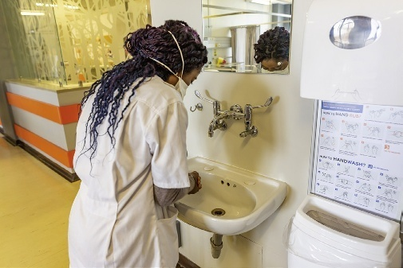
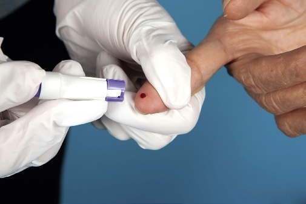
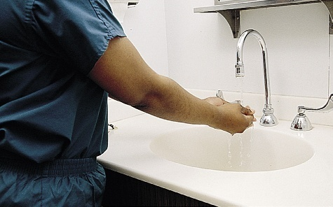
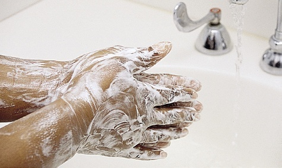
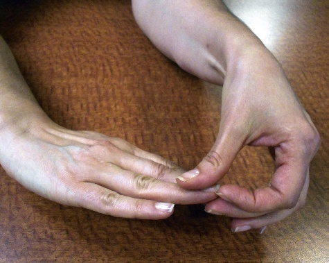
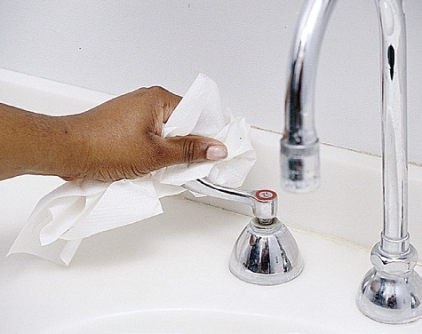
Alcohol-based hand rub (ABHR) dispensers are located at point-of-care stations outside every client room in modern healthcare facilities. Formulated with 60% to 90% ethanol or isopropanol with added skin emollients, ABHR is rapidly lethal to most vegetative bacteria (including MRSA and VRE), mycobacteria, and enveloped viruses like influenza and SARS-CoV-2.
在现代化医疗护理机构中，免水含酒精手消液分配器（ABHR）已全面安装于每间病房门外的床旁照料点。该制剂含有 60% 至 90% 浓度的医用乙醇或异丙醇并复配皮肤润肤剂，能在数十秒内迅速灭活绝大多数细菌繁殖体（包括 MRSA 与 VRE）、分枝杆菌以及流感、SARS-CoV-2 等包膜病毒。
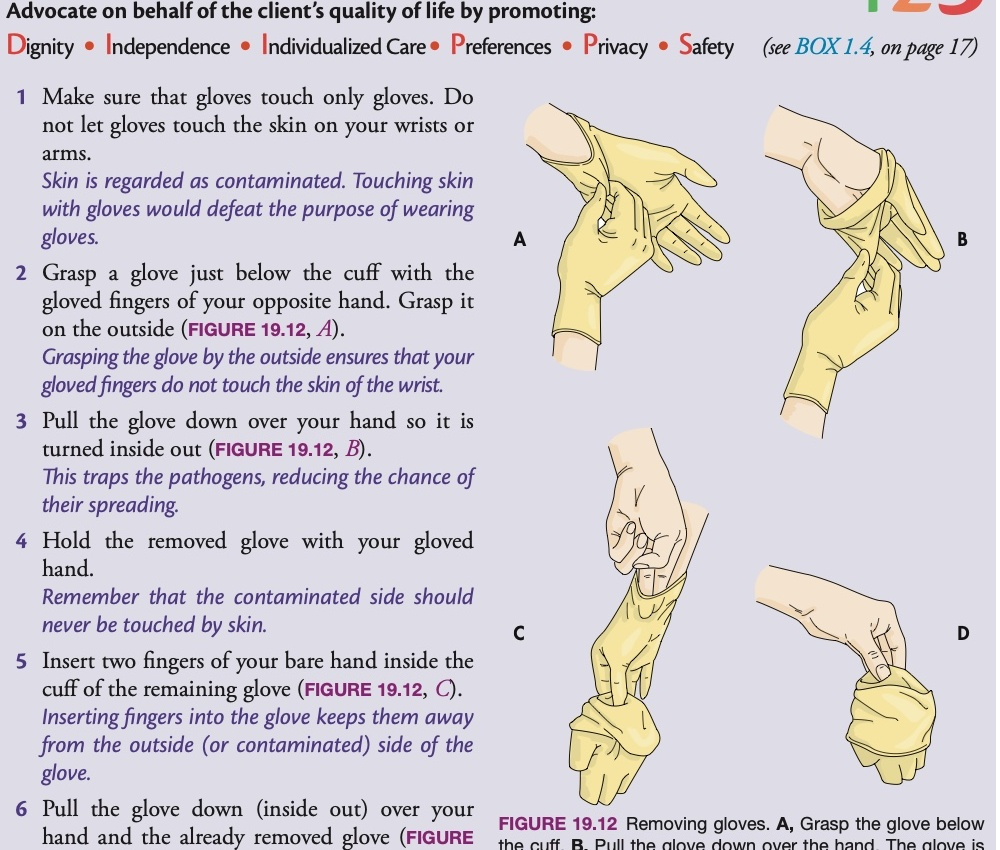
Gloves are the most frequently used component of PPE. However, an improperly removed glove will contaminate the worker's bare fingers and wrists, entirely defeating its protective purpose. Figure 19.12 outlines the gold-standard four-step sequence to remove contaminated gloves safely:
医用手套是临床使用频次最高的个人防护装备。然而，脱卸手套手法若不规范，手套外表面的高浓度病原体将直接玷污医护人员的裸露手指与手腕，使其防护价值荡然无存。图 19.12 详尽演示了预防自污染的标准脱手套四步金律：
Disinfection is the process of destroying vegetative pathogens on inanimate surfaces. When using hospital-grade chemical disinfectants (such as accelerated hydrogen peroxide wipes, sodium hypochlorite solutions, or quaternary ammonium formulations), support workers must understand that disinfection is NOT instantaneous.
消毒是指消灭无生命物体表面滋生的繁殖体致病菌的过程。在日常使用医疗级化学消毒剂（如过氧化氢消毒湿巾、含氯次氯酸钠稀释液或季铵盐消毒液）时，支持工作者必须树立一个核心科学认知：化学消毒绝非一擦即逝的瞬间杀菌！
Contact time—also called dwell time or wet time—is the exact amount of time a disinfectant must remain visibly wet on a surface to kill the targeted pathogens as certified by Health Canada. If a disinfectant has a 3-minute contact time, the surface must remain wet for 3 full minutes. Wiping the surface dry prematurely with a cloth or blowing it dry inactivates the chemical prematurely, leaving viable pathogens alive on the equipment.
所谓接触时间（Contact time / 亦称滞留时间或湿润时间），是指经加拿大卫生署权威认证、消毒剂在受体表面保持肉眼可见的湿润状态以充分杀灭目标病原体所需的法定时间。例如某种消毒湿巾标定接触时间为 3 分钟，那么擦拭过的物体表面就必须自然维持湿润整整 3 分钟！若过早用干布擦去或吹干，会导致化学反应提前终止，致使器械表面依然残存大量具有侵袭力的存活病菌！
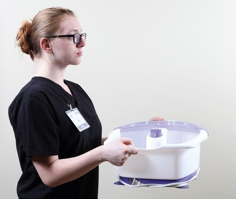
Figure 19.13 depicts the correct posture when carrying soiled linens or basins. Soiled linens are saturated with body fluids, dead squamous epithelial cells, and microorganisms. If hugged against the chest or uniform during transport, pathogens readily transfer onto your clothing, which then cross-contaminates subsequent clients throughout your shift.
图 19.13 生动展示了转运脏污床单或便盆时的标准化操作身姿。换下的污浊床单吸附了大量体液汗液、脱落鳞状皮屑及致病菌。若护工在搬运时习惯性地将其搂抱在胸前或紧贴制服，病菌会瞬间渗透污染工作服，导致工作服沦为移动传染源，在接下来的整个班次中将病菌持续播散给其他案主！
Isolation precautions are evidence-based clinical protocols designed to prevent the transmission of infectious agents within healthcare settings. The Public Health Agency of Canada and hospitals structure isolation precautions into two hierarchical tiers:
隔离预防体系是依据循证医学构建的临床感控规程，旨在全方位切断病原体在医疗与照护环境中的传播链。加拿大公共卫生署（PHAC）与各大医院将其科学划分为两个层级：
The order in which personal protective equipment (PPE) is put on (donned) and removed (doffed) is vital to preventing self-contamination. Microorganisms on the outside of used equipment must never touch your face, skin, or clean personal clothing.
个人防护装备（PPE）的穿戴（Donning）与脱卸（Doffing）次序绝非随意排列，而是杜绝医护人员发生“自身污染”的生死法则。使用后防护装备外表面附着的亿万病菌，绝对不允许触碰您的面部、皮肤或清洁工作服。
Masks provide a barrier against the spread of respiratory pathogens. They protect the wearer from breathing in large airborne droplets and infectious sprays, and they protect clients from pathogens exhaled or coughed out by the healthcare worker.
医用防护口罩构成了抵御呼吸道病原体播散的双向物理屏障。它既能保护佩戴者自身免于吸入空气中的飞沫与飞溅物，又能作为源头控制工具，阻断工作人员自身呼出或咳嗽排出的病菌污染案主。
The mucous membranes of the eyes (conjunctiva) are extremely permeable to respiratory viruses and bloodborne pathogens. Standard eyeglasses DO NOT provide adequate eye protection because they lack top, bottom, and side shields against splashes. Approved medical goggles or full-face shields must be worn whenever there is risk of sprays, splashes, or respiratory droplet projection.
人体的眼结膜黏膜对呼吸道病毒与血源性病原体具有极高的易感穿透性。普通日常近视眼镜【绝对无法替代专业眼部防护】，因其顶部、底部及侧面均缺乏防喷溅侧翼护板。凡遇到喷溅、飞洒或呼吸道飞沫直射的高危操作，必须强制佩戴认证的医疗防护护目镜或全面屏防溅面罩。
Isolation gowns must be made of fluid-resistant material. The gown must fully cover the support worker's torso from the neck down to the knees, and arms from the shoulders down to the wrists, wrapping completely around the back to prevent uniform exposure during body repositioning or hygiene care.
防渗隔离衣必须由抗液体渗透的医用无纺布或防水涂层材质制成。隔离衣必须完全覆盖支持工作者自颈部至膝盖的躯干、以及由肩部至手腕的双臂，且后襟必须完全严密包裹后背，杜绝在协助案主翻身或擦洗时工作服受玷污。
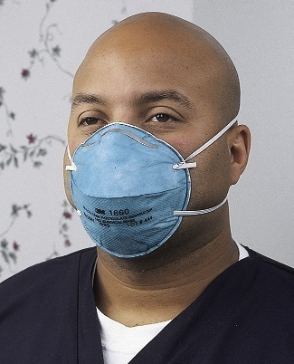
Unlike surgical masks that fit loosely, an N95 respirator is engineered to achieve an airtight facial seal. Support workers must undergo professional qualitative or quantitative fit-testing annually to ensure the specific brand, model, and size correctly seals against their individual facial anatomy. Facial hair (beards) prevents an airtight seal and prohibits N95 use under occupational health regulations.
与佩戴相对宽松的外科口罩不同，N95 医用防微粒口罩在工程力学上被设计用于实现与面部边缘的绝对气密性贴合。支持工作者每年必须依法接受专业的定性或定量密合测试（Fit-Testing），确保特定品牌、型号与尺码能够严丝合缝匹配自身面部轮廓。面部胡须会破坏边缘气密性，依据职业安全法规留胡须者严禁使用 N95！
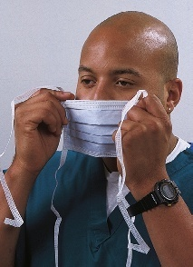
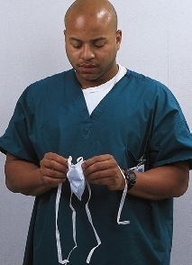
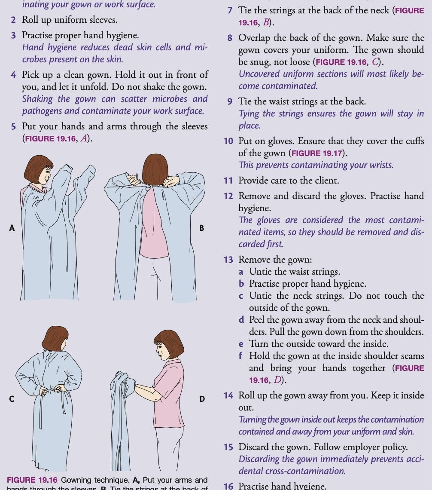
Figure 19.16 illustrates the complete gowning procedure. Gowns protect clothing from microbial contamination and body fluid soiling. The back overlap technique shown in Step C is mandatory in Canadian hospitals to prevent gaps where contaminated bed edges or client wheelchairs could touch personal attire.
图 19.16 详细解构了标准化穿隔离衣程序。隔离衣的核心功能是建立严密的防液体与微生物屏障。步骤 C 所示的“后背双重交叉重叠包裹”手法，是加拿大各大医疗机构中强制推行的规程，坚决消除因后背裸露导致工作服刮蹭受污染病床或轮椅的隐患。
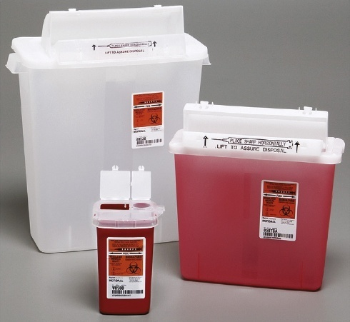
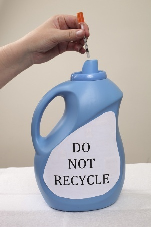
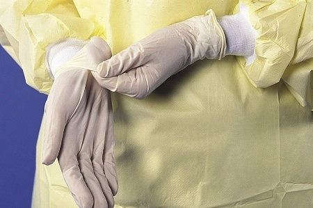
Sharps injuries are the most hazardous occupational hazard facing healthcare personnel. Contaminated needles, razor blades, and lancets transmit bloodborne viruses including Hepatitis B (HBV), Hepatitis C (HCV), and Human Immunodeficiency Virus (HIV).
针刺锐器伤是医护人员面临的最凶险职业暴露伤害。被血液污染的注射针头、剃须刀片及采血针极易传播致命血源性病原体，包括乙型肝炎病毒（HBV）、丙型肝炎病毒（HCV）以及人类免疫缺陷病毒（HIV / 艾滋病病毒）。
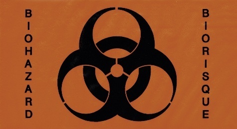
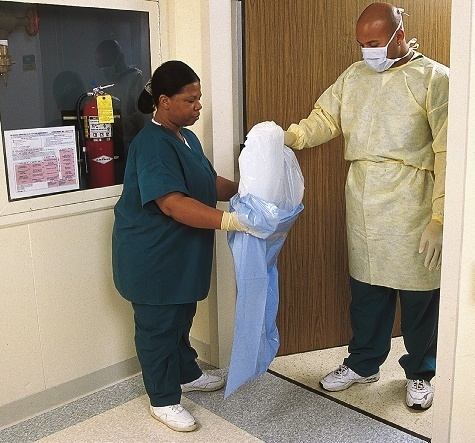
Double-bagging is required when the outside of a contaminated waste or laundry bag becomes visibly soiled, wet, torn, or when hospital policy mandates it for strict airborne/contact isolation rooms. This technique ALWAYS requires two staff members working in tandem:
当隔离病房内的废弃物或污衣袋外表面沾染污渍、潮湿、破损，或院感政策对烈性传染病作出强制规定时，必须实施双层袋装法。该项操作【始终需要两名工作人员协同执行】（图 19.20）：
Surgical asepsis, or sterile technique, eliminates all microorganisms from an area or object. It is required during sterile dressing changes, catheterizations, injections, and surgical operating procedures. As a support worker, understanding these uncompromising rules allows you to assist safely without causing catastrophic infections.
外科无菌术（无菌技术）致力于消灭指定区域或物品上的全部微生物。在执行无菌换药敷料更换、无菌导尿插管、各类注射及手术室操作中不可或缺。作为支持工作者，深入理解这些毫不妥协的原则，才能在协助护士操作时做到临危不乱、守护生命防线。
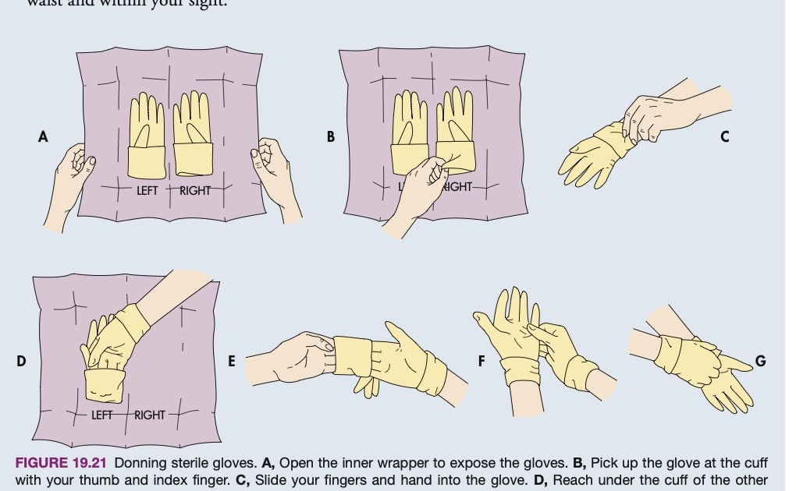
Figure 19.21 breaks down the precise sequence required to don sterile gloves without contaminating their outer surfaces. The inner cuff is turned down, exposing the inner lining (clean).
图 19.21 详尽展现了避免手套外表面受污染的标准戴无菌手套分解程序。手套包装内翻折的手套袖口内侧属于接触皮肤的“清洁面”。
Bare hands touch ONLY the inside surface of the cuff. Once one hand is gloved, the gloved fingers slip under the sterile outer fold of the second glove (sterile touching sterile).
裸露的双手【只能触碰袖口内壁】。当第一只手戴好手套后，已戴手套的手指必须伸入第二只手套的外翻袖口下方（无菌触无菌原则），从而安全完成第二只手的穿戴。
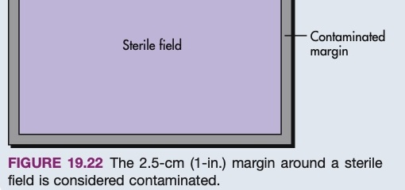
Figure 19.22 defines the foundational physical boundary of every sterile field. A 2.5-centimetre (1-inch) border around all edges of the sterile drape is considered contaminated because it abuts nonsterile air currents and furniture edges. All sterile instruments and dressings MUST be placed well inside this 2.5-cm boundary line.
图 19.22 确立了每一个无菌操作台面最基础的物理边界红线。无菌铺单四周外缘 2.5 厘米（1 英寸）以内的区域，因极易受周围空气涡流扰动及非无菌桌面边缘接触，在外科规程中一律被判定为【已污染区】！所有无菌敷料、注射器与器械，必须严格摆放于该 2.5 厘米红线以内的绝对中央区域。
Professional Action: Speak up immediately and politely remind the nurse before client or equipment contact occurs: 'Excuse me, this room requires Contact Precautions; gloves and gown are stocked in the cart outside.' Required PPE: Gloves and a fluid-resistant gown. On entry: Perform hand hygiene, don gown, don gloves covering cuffs.
专业处置方案：在护士触碰案主或器械前立即礼貌上前提醒：“请稍等，该房间正在执行接触隔离，门外推车备有隔离衣与手套。”该情境下硬性需要的 PPE：医用手套与防渗隔离衣。
Inside: Touch only necessary items, avoid touching your own face. On exit: Doff gloves and gown inside room, discard into biohazard bin, perform hand hygiene immediately upon stepping outside.
进入时：执行手卫生，穿隔离衣，戴手套并包覆袖口。病房内：仅接触必要设备，绝不触摸自身面部。离开时：在病房门内依序脱卸手套与隔离衣并投入生物危害桶，跨出门槛后即刻执行彻底手卫生！
The complete interactive self-assessment quiz bank for Chapter 19 is independently compiled into the dedicated Chapter 19 Practice Exam Bank. Support workers are encouraged to complete all 27 true/false and multiple-choice questions to reinforce competencies before practical clinical placements.
本章包含的全部 27 道全真自测模拟试题（涵盖 21 道正误判断题、5 道单项选择题及 1 道多项识别题），已完整编排于独立的【第 19 章：自测习题库】模块中。建议支持工作者在进入临床实习前认真完成全部题目的实操演练，巩固感控胜任力！